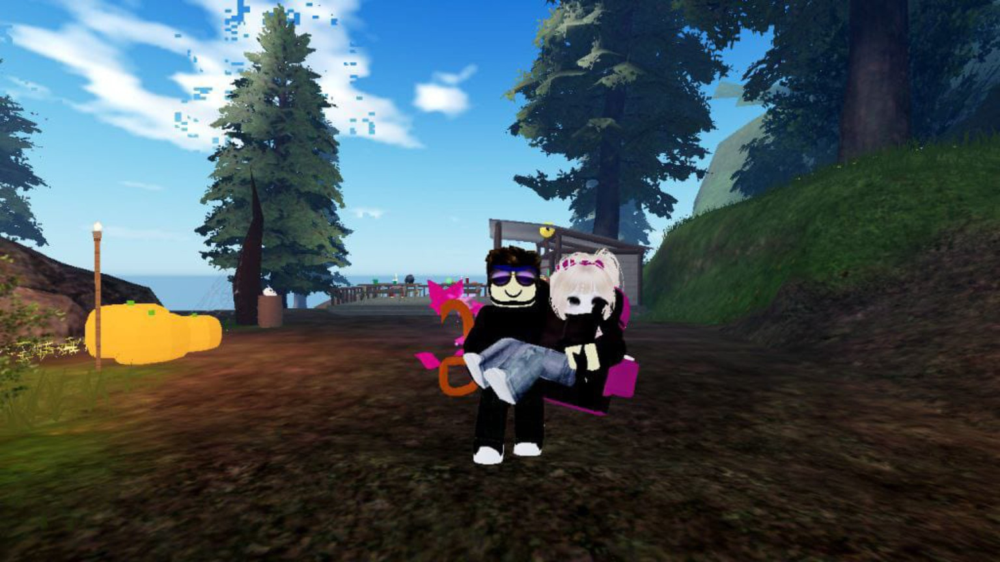

31 Juli 2004 — Titik awal sebelum dunia maya mempertemukan kita
Yasmintul
Ada kalanya aku takjub pada bagaimana koneksi internet mampu mengantarkan debar jantungku melintasi jarak, langsung menujumu tanpa tersesat.
Kita bertemu di sebuah dunia yang tidak bisa disentuh oleh fisik, namun segala rasa yang tumbuh di dalamnya adalah hal paling nyata yang pernah aku miliki.
Dari balik monitor yang menyala di tengah kegelapan kamarku, suaramu yang terdengar melalui mikrofon selalu berhasil menjadi lagu pengantar tidur yang paling menenangkan.
Mengingat hari ini di tahun 2004, semesta menyambut kehadiranmu, seorang wanita yang kelak akan mengubah cara pandangku tentang jarak dan kedekatan.
Usiamu bertambah hari ini, menyadarkanku bahwa waktu yang kita habiskan di dalam ruang virtual itu adalah investasi emosional paling berharga di dunia nyata.
Aku mulai menyukai rutinitasku, menunggu ikon namamu menyala terang, menandakan bahwa engkau telah hadir dan siap menjelajahi dunia bersamaku.
Bukan genggaman tangan secara fisik yang menguatkanku, melainkan kehadiran avatar kita yang selalu berdiri berdampingan dalam setiap petualangan yang kita ciptakan.
Kamu mengajarkanku bahwa cinta tidak melulu soal raga yang berdekatan, melainkan dua frekuensi pemikiran yang bersedia saling memahami meski terhalang layar.
Jika ada hal yang ingin kubekukan, itu adalah momen saat tawamu memecah keheningan di sela-sela permainan kita, meresap langsung ke dalam hatiku.
Hari ini adalah perayaan untukmu, Yasmintul, seseorang yang membuktikan bahwa keajaiban bisa bermula dari sebaris teks dan sebuah koneksi jaringan.
Piksel yang Menyimpan Nyawa



Tangkapan layar ini bukan sekadar gambar avatar yang tersusun dari blok-blok digital tanpa nyawa.
Di balik setiap kotak dan warna dunia Roblox yang kita jalani, tersimpan rekaman memori tentang perbincangan mendalam yang kita bagi hingga larut malam.
Orang lain mungkin hanya melihat karakter permainan, namun aku melihat caramu melompat, berlari, dan menungguku dengan penuh kesabaran.
Karakter kita yang saling berhadapan di layar itu adalah representasi dari jiwa kita yang saling mencari kenyamanan satu sama lain.
Meskipun wujud kita di sana dibatasi oleh piksel, cinta yang aku rasakan setiap kali melihat namamu di atas karaktermu adalah cinta yang sangat membumi.
Ada kalanya layar membeku sesaat, namun debaranku untukmu tidak pernah mengalami gangguan sinyal sedikit pun.
Aku menyimpan setiap gambar ini dengan sangat rapi, mengabadikan setiap momen di mana kita berhasil menciptakan kebahagiaan kita sendiri dari nol.
Visual ini adalah saksi bisu bagaimana kita menolak menyerah pada keterbatasan jarak.
Awalnya, kita hanyalah dua nama pengguna asing yang secara kebetulan dijatuhkan oleh takdir pada satu server yang sama.
Sebuah sapaan singkat di kolom obrolan perlahan berkembang menjadi percakapan panjang yang menyita seluruh fokusku padamu.
Tanpa kusadari, aku mulai merindukan suaramu lebih dari aku menikmati permainan itu sendiri.
Menghabiskan waktu berjam-jam membangun struktur di dunia virtual, kita ternyata sedang membangun fondasi kepercayaan yang kuat di dunia nyata.
Ada malam-malam di mana kita hanya membiarkan karakter kita duduk terdiam di dalam game, sementara kita berbagi cerita tentang keluh kesah dunia nyata.
Engkau mengubah ruang yang tadinya hanya sebatas permainan menjadi tempat pelarian yang paling aman untuk segala penatku.
Aku mengagumi caramu mendengarkan, bagaimana jeda suaramu di seberang sana selalu memberiku kepastian bahwa aku tidak dibiarkan sendiri.
Bahkan ketika layar kita harus dimatikan dan kita kembali ke kehidupan masing-masing, esensimu tetap tertinggal di kepalaku.
Jarak geografis di antara kita seolah menjadi tidak relevan saat aku menyadari bahwa hati kita memiliki koordinat yang persis sama.
Layar monitor ini mungkin memisahkan raga kita untuk sementara, namun ia tidak akan pernah berhasil menciptakan spasi di antara jiwa kita.
Melihat hari ini, aku menyadari bahwa perasaanku padamu telah tumbuh melewati batas-batas kabel dan jaringan nirkabel.
Aku menantikan hari di mana resolusi layar berubah menjadi realita, di mana tatapan virtual ini akhirnya akan saling bersirobok secara langsung.
Tiga Janji di Balik Layar
Aku berjanji akan selalu login dan siap menjadi rumah untukmu kembali, mendengarkan segala lelahmu dari balik headset, dan memelukmu lewat kata-kata.
Tidak peduli seburuk apa pun dunia nyata memperlakukanmu hari itu, engkau akan selalu memiliki aku yang menunggu di ujung koneksi ini.
Meskipun kisah kita dibangun di atas server dan baris kode, janjiku padamu kutulis dengan tinta realita yang tak akan terhapus oleh waktu.
Aku akan terus bersabar, mengumpulkan rindu demi rindu, hingga tiba saatnya kita tidak perlu lagi mematikan panggilan sebelum tertidur.
Aku bersumpah untuk menjadikanmu tujuanku, menunggu dengan penuh harap hari di mana aku bisa memindahkan segala janji virtual ini ke dalam genggaman tanganmu secara langsung.
Kesetiaanku padamu tidak akan terputus, ia akan terus mengalir tanpa peduli seberapa jauh jarak fisik membentang di antara kita.
Semakin banyak waktu berlalu, ilusi tentang jarak memudar, menyisakan sebuah kenyataan bahwa aku sungguh-sungguh mencintaimu.
Yasmintul, kehadiranmu di duniaku membuktikan bahwa takdir tidak pernah kehabisan cara yang unik untuk menyatukan dua manusia.
Terima kasih telah menemani malam-malamku, memberikan warna pada hari-hari yang sebelumnya terasa biasa saja.
Dari sekian banyak server dan jutaan kemungkinan di luar sana, aku bersyukur hatiku memutuskan untuk berhenti di depanmu.
Dunia virtual mempertemukan kita, namun dunia nyata yang kelak akan menjadi saksi bagaimana rindu ini akhirnya menemukan tuannya.
Biar waktu yang bekerja menyelesaikan tugasnya mengikis jarak, sementara tugasku adalah memastikan hatiku tetap terpaut padamu.
Rayakanlah bertambahnya usiamu ini dengan sebuah senyum, karena di balik layar ini, ada aku yang selalu merayakan keberadaanmu.